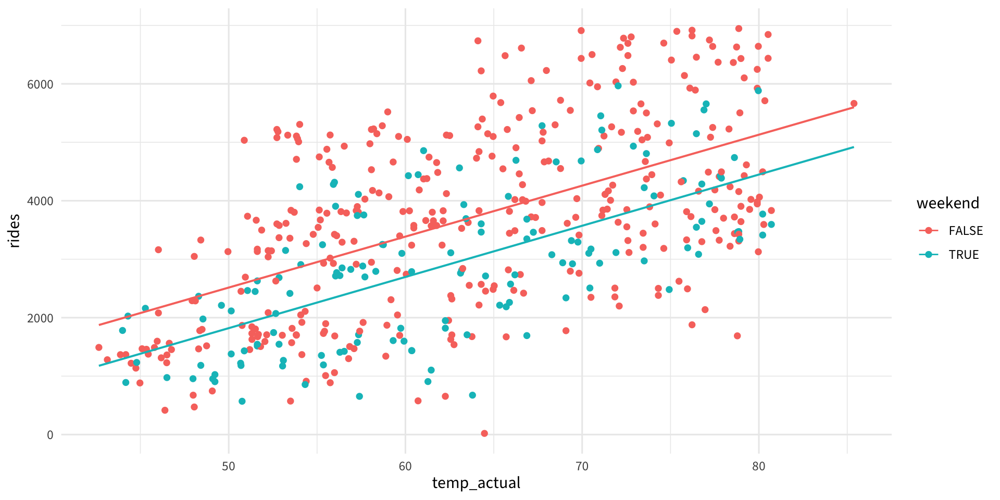
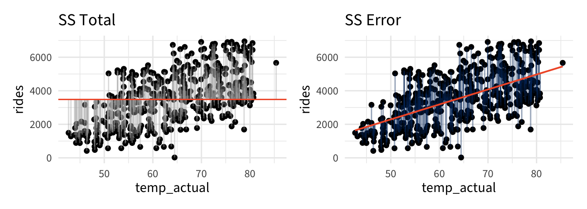
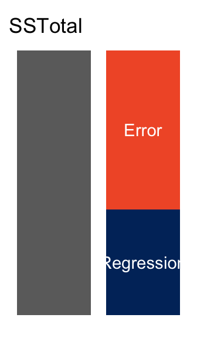
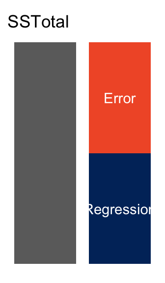
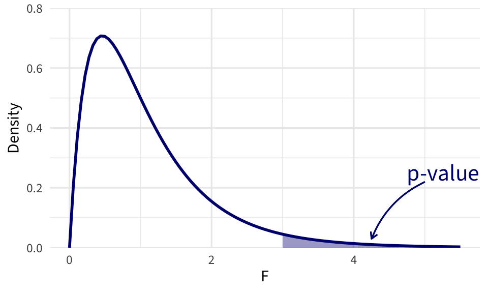

Call:
lm(formula = rides ~ temp_actual * weekend, data = bikes)
Coefficients:
(Intercept) temp_actual weekendTRUE
-1843.867 87.173 -714.938
temp_actual:weekendTRUE
0.411 Inference for MLR
Day 11
Prof Amanda Luby
Carleton College
Stat 230 - Spring 2026
MLR model for bikes data
Warm up: Write out the theoretical and fitted regression model (use blank space on next slide)
Do we need a different slopes model?
# A tibble: 4 × 5
term estimate std.error statistic p.value
<chr> <dbl> <dbl> <dbl> <dbl>
1 (Intercept) -1844. 416. -4.44 1.13e- 5
2 temp_actual 87.2 6.44 13.5 9.31e-36
3 weekendTRUE -715. 796. -0.899 3.69e- 1
4 temp_actual:weekendTRUE 0.411 12.5 0.0328 9.74e- 1
Testing a single coefficient
Hypotheses: \(H_0: \ \beta_j = \#\) vs. \(H_a: \ \beta_j \underset{>}{\overset{<}{\ne}} \#\)
Test statistic: \(t = \dfrac{\widehat{\beta}_j - \#}{SE(\beta_j)}\)
Reference distribution: \(t\) distribution with d.f. = \(n-(k+1)\)
p-value: Area in the tail(s) specified by \(H_a\)

CIs for a single coefficient
\(\widehat{\beta}_j \pm t^*_{n-(k+1)} \cdot SE(\widehat{\beta}_j )\)
Answer: Do we need a different slopes model?
Do we need weekend at all?
# A tibble: 4 × 5
term estimate std.error statistic p.value
<chr> <dbl> <dbl> <dbl> <dbl>
1 (Intercept) -1844. 416. -4.44 1.13e- 5
2 temp_actual 87.2 6.44 13.5 9.31e-36
3 weekendTRUE -715. 796. -0.899 3.69e- 1
4 temp_actual:weekendTRUE 0.411 12.5 0.0328 9.74e- 1Caution!
Do we need weekend at all?
# A tibble: 3 × 5
term estimate std.error statistic p.value
<chr> <dbl> <dbl> <dbl> <dbl>
1 (Intercept) -1851. 358. -5.17 3.39e- 7
2 temp_actual 87.3 5.52 15.8 6.45e-46
3 weekendTRUE -689. 125. -5.53 5.20e- 8Explained Variability

Explained Variability
“Smaller” Model

“Larger” Model

Idea: Is the proportion of variability explained by Model 2 significantly better than Model 1?
Can we just use \(R^2\)?
- About 33.22% of the variability in rides is explained by the regression model including temperature
- About 37.09% of the variability in rides is explained by the regression model including temperature and an indicator for weekend
- About 38.981% of the variability in rides is explained by the regression model including temperature, windspeed, and an indicator for weekend
- About 39.014% of the variability in rides is explained by the regression model including temperature, windspeed, an indicator for weekend, and an interaction between weekend and windspeed
What trend do you notice?
\(R^2\) vs adjusted \(R^2\)
\[R^2 = 1 - \frac{SSE}{SST}\]
\[R^2_{adj} = 1 - \frac{SSE/(n-k)}{SST/(n-1)}\] \[R^2_{adj} = 1 - \frac{MSE}{MST}\]
- \(R^2\) always increases when predictors are added to the model
- \(R^2_{adj}\) could decrease if unnecessary predictors are added to the model
- Better to use \(R^2_{adj}\) for multiple regression
Adjusted \(R^2\)
- About 33.08% of the variability in rides is explained by the regression model including temperature
- About 36.83% of the variability in rides is explained by the regression model including temperature and an indicator for weekend
- About 38.612% of the variability in rides is explained by the regression model including temperature, windspeed, and an indicator for weekend
- About 38.522% of the variability in rides is explained by the regression model including temperature, windspeed, an indicator for weekend, and an interaction between weekend and windspeed
Formal test for comparing models
Full model
\(\mu \lbrace Y | X \rbrace = \beta_0 + \beta_1 x_1 + \beta_2 x_2 + \beta_3 x_1 x_2\)
Reduced model
\(\mu \lbrace Y | X \rbrace = \beta_0 + \beta_1 x_1\)
Hypotheses
\(H_0:\ \beta_{2} = \beta_3 = 0\)
\(H_a:\) at least one \(\beta_j \ne 0\), \(j=2,3\)
Comparing models with an F-test
Test statistic
\[ \begin{split} F &= \frac{(R^2_{\text{full}} - R^2_{\text{reduced}}) / d}{(1 - R^2_{\text{full}}) / df_{\text{full}}}\\ &= \frac{(\text{SSR}_{\text{full}} - \text{SSR}_{\text{reduced}}) / d}{\text{MSE}_{\text{full}}}\\ &= \frac{(\text{SSE}_{\text{reduced}} - \text{SSE}_{\text{full}}) / d}{\text{MSE}_{\text{full}}} \end{split} \]
where
- \(d = \text{df}_{full} - \text{df}_{reduced}\) = # betas being tested
- \(\text{df}_{i} = n - (p + 1)=\) error d.f. for model \(i\)
- \(\text{MSE}_{\text{full}} = \dfrac{\text{SSE}_{\text{full}}}{\text{df}_{\text{full}}}\)
F distribution
The F-statistics follows an \(F\) distribution with \(d\) and \(n-p-1\) d.f.

Upper-tail p-values

To obtain upper-tail areas: 1 - pf(stat, df1, df2)
Putting it all together
| model | r.squared | df | df.residual | nobs |
|---|---|---|---|---|
| Full | 0.371 | 3 | 496 | 500 |
| Reduced | 0.332 | 1 | 498 | 500 |
\[ F = \frac{(R^2_{\text{full}} - R^2_{\text{reduced}}) / d}{(1 - R^2_{\text{full}}) / df_{\text{full}}} = \frac{(0.371 - 0.332) / 2}{(1 - 0.371) / 496} \approx 15.4 \]
Reading R output
lm(formula = rides ~ temp_actual * weekend, data = bikes)
Coefficients:
Estimate Std. Error t value Pr(>|t|)
(Intercept) -1843.867 415.700 -4.436 1.13e-05 ***
temp_actual 87.173 6.439 13.538 < 2e-16 ***
weekendTRUE -714.938 795.698 -0.899 0.369
temp_actual:weekendTRUE 0.411 12.539 0.033 0.974
Residual standard error: 1253 on 496 degrees of freedom
Multiple R-squared: 0.3709, Adjusted R-squared: 0.3671
F-statistic: 97.47 on 3 and 496 DF, p-value: < 2.2e-16Output was edited to fit on one slide
Extra sums of squares F-test in R
- 1
- Fit the full model
- 2
- Fit the reduced model
- 3
-
Use
anova()to compare the two models. The first argument should be the reduced model.
Analysis of Variance Table
Model 1: rides ~ temp_actual
Model 2: rides ~ temp_actual * weekend
Res.Df RSS Df Sum of Sq F Pr(>F)
1 498 826326178
2 496 778436469 2 47889709 15.257 3.713e-07 ***
---
Signif. codes: 0 '***' 0.001 '**' 0.01 '*' 0.05 '.' 0.1 ' ' 1